Dreem Headband (Patient Materials)
- Data transfer protocol for patients
- Device How To / setup for wear
- Troubleshooting/FAQ
- Device return
General Device Introduction
| 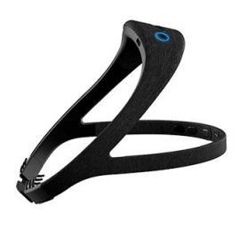 |
The Dreem 2 device is a wireless headband that can record, store, and automatically analyse brain function such as sleep activity, in real-time without any connection (e.g., Bluetooth, Wi-Fi, etc.).
What does it record?
The headband had sensors on the front and back of the device that records brain wave activity and movement data, which is used to calculate sleep stages. This data is stored on the headband then uploaded to the Internet when the Dreem 2 headband is connected to Wi-Fi.
How is it used?
The Dreem 2 headband is worn on the head during sleeping. It has sensors embedded in the front and back parts of the headband to ensure it records accurate reading while you move during sleep. The headband is flexible and can be adjusted to accommodate all head shapes and sizes. The sensors within the Dreem 2 headband should be in direct contact with the skin similar to how it is positioned below.
Table 1:An overview of how the device is positioned on the head.
 |
| Figure 1: The front sensors must be placed in the middle of the forehead. |
 |
| Figure 2: The back sensors must be pushed against your scalp. |
| 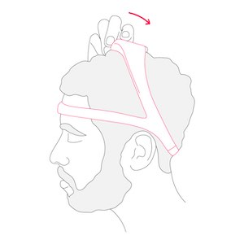 |
| Figure 3: To ensure optimal support throughout the night, pull the upper arch backwards. |
|
| Figure 1: The front sensors must be placed in the middle of the forehead. |
|
| Figure 2: The back sensors must be pushed against your scalp. |
| Figure 3: To ensure optimal support throughout the night, pull the upper arch backwards. |
Data transfer protocol for patients
As a patient: do I need to do anything on a daily basis or all N days?
Yes. On your first day of receiving the Dreem 2 headband you should connect it your home Wi-Fi. On days where you will be asked to wear the Dreem 2 headband you should: (i) adjust the headband placement to ensure it records accurate data; and (ii) charge it after a night’s wear. Detailed instructions for these activities are outlined in Section 6.
As a patient: do I need to do anything after each individual period of device / app use ended?
The Dreem 2 headband should be placed on charge after a night’s sleep. The battery lasts up to 12-hours and takes 3-hours to fully charge.
As a patient: do I need to do anything after my full periods of use of a specific device / app end?
Yes. After your full period of use ends in the trial, you must go to the study site. The research team will take the device and transfer any data that has not been uploaded.
Device How To / setup for wear
What sort of a device / application is this, what is it for and how does it work?
The Dreem 2 device is a headband that records movement and brain activity data to better understand sleep behaviours as illustrated to the right. The headband uploads data from the device to a server using Wi-Fi and must be configured on your home internet. The Dreem 2 mobile application is used to connect to the headband through Bluetooth and to start sleep sessions.
Pairing your Smartphone with the Dreem 2 Headband
Turn on your headband by pressing the power button located on the front of the headband.
The power button will start blinking blue if your headband is charged, or orange if it needs to be charged.
| 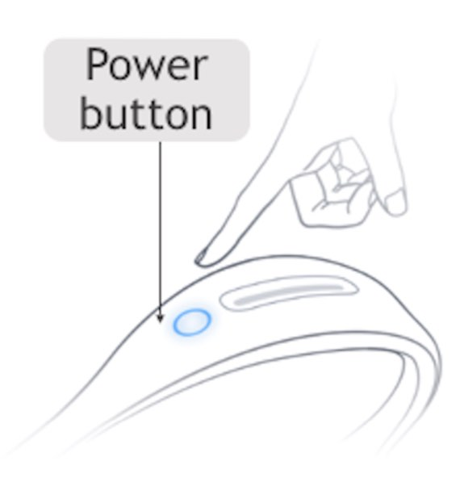 |
Now take the Samsung smartphone that you were provided.
Tap the Dreem 2 icon (as illustrated to the right) and the application will open.
 |
|
The smartphone will be logged in and you will see the home screen.
After a few seconds, a popup appears indicating that your headband is pairing.
 |
|
Once paired, you can use the Dreem 2 application to check the_battery level_ of the headband and configure a_sleep session_ where the headband records data.
| 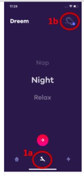 |
To view these options, tap the  button on the bottom of the screen (LINK TO SECTION 1A). From there, tap the Dreem 2 headband icon in the top right corner (LINK TO SECTION 1B).
button on the bottom of the screen (LINK TO SECTION 1A). From there, tap the Dreem 2 headband icon in the top right corner (LINK TO SECTION 1B).
You should now see the “STATUS” of your headband, including_Bluetooth connection_,battery status and_Wi-Fi connection_.
A  icon appears next to the Bluetooth icon (
icon appears next to the Bluetooth icon ( ) and Wi-Fi icon (
) and Wi-Fi icon ( ) to show that they aresuccessfully connected.
) to show that they aresuccessfully connected.
The status of the battery is in orange to show that it is charging.
 |
|
Are you having trouble connecting your headband to the app?
Please ensure thatyour headband is sufficiently charged and near the smartphone. If you continue to have issues,please restart your phone and headband by turning both off and on by holding the power button down on each device for 5 seconds.
Connecting to Wi-Fi (first use only)
Press the power button on the top of the headband to turn it on. The headband you are pairing should be unplugged from a power source.
| 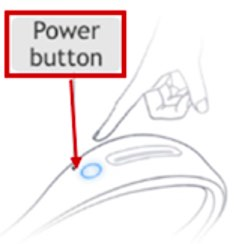 |
Now take the Samsung smartphone that you were provided.
Tap the Dreem 2 icon (as illustrated to the right) and the application will open.
Tap the button on the bottom of the screen (LINK TO SECTION 1A). From there, tap the Dreem 2 headband icon in the top right corner (LINK TO SECTION 1B).
button on the bottom of the screen (LINK TO SECTION 1A). From there, tap the Dreem 2 headband icon in the top right corner (LINK TO SECTION 1B).
 |
|
The “Headband” screen will now appear. Tap “Settings” in the bottom right corner (LINK TO SECTION 2A).
| 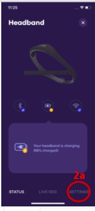 |
Tap the ”Headband Settings”(LINK TO SECTION 2A) and tap the “headband settings’ (LINK TO SECTION 2B)
 |
|
The Configuration screen will be shown.
Tap “Find a Network” and select your home Wi-Fi and enter your password.
| 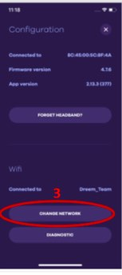 |
A blue circle with will appear on the headband on the Headband section of the app.
Now you are connected to Wi-Fi and ready to begin using the Dreem 2 headband. If you are not ready to sleep, please turn off the headband by pressing and holding the power button for 3 seconds and the light on the front will turn off.
 |
|
Wearing the headband
DREEM 2 is embedded with sensors located on thefrontandbackof the headband. To ensure optimal signal quality, it is essential that all the sensors are in direct contact with the skin on the forehead and scalp in the back part of the head. The headband should be adjusted on your first site visit.
 |
|
| Figure N. 4 EEG electrodes for measuring brain activity and one pulse sensor (that lights green) to measure heart rate are located on the part of the headband worn on the forehead. |
Adjusting the headband
| 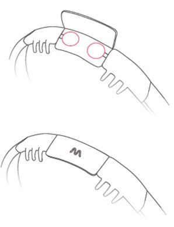 |
There are three sizes of adjustment strips (S, M, L) (Fig. 3, a). The headband uses an elastic, Velcro strap to accommodate a variation of head sizes: three sizes of adjustment strap are provided (S, M, L). To adjust the size, detach the Velcro from the back of the headband, add a new strap, attach the red circles to Velcro and close it. A tighter headband will lead to better skin contact, resulting in more accurate data being recorded.
Positioning the headband
There are three steps to ensure the headband is placed firmly on the head for optimal recording.
Step 1: front headband
Place the front part of the headband (the thinner part) against your forehead so that it touches your skin. There should be no hair between your forehead and the band.
 |
|
Step 2: back of head
Place the part of the headband highlighted as far as possible between your hair. It must be in contact with your skin.
| 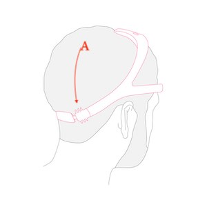 |
Step 3: top of head
To ensure optimal support throughout the night, pull the upper arch backwards.
 |
|
Step 4: adjustment for long hair
If you have long hair, position the back of the headband under your hair to improve the data recorded from the sensors on the back of the headband.
| 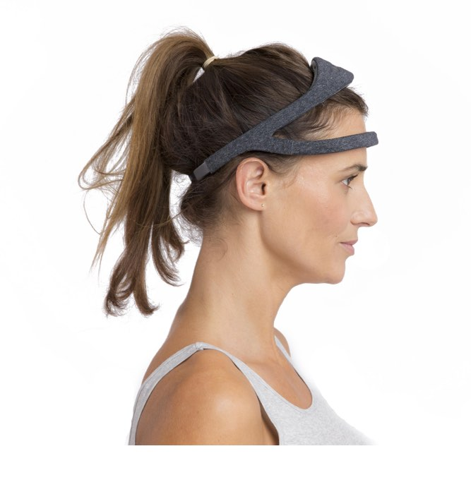 |
Starting a Sleep Recording
The Dreem 2 headband measures brain activity and movement during sleep. A_sleep session_ should be activated in the Dreem 2 mobile application prior to wearing the headband as outlined below:
Step 1: Unplug the headband from charge and press the power button on the top of it. The LED will turn blue once the headband is on. The headband should have 60% charge or higher to record a night’s sleep.
 |
|
| Figure 5:Power on the Dreem 2 headband by pressing the circular button on the front of the band. |
Step 2:Open the Dreem 2 App and it will automatically connect to your headband. You will know it is a success if the headband icon has a tick next to it as illustrated below:
 |
|
| Figure N: The Dreem 2 headset is connected when it has a white tick next to it. |
Step 3: Check the signal quality of the Dreem 2 headband sensors to ensure the position of the headband responds high-quality data as outlined below:
On the home menu,tap on the headband icon at the bottom on your screen (LINK TO SECTION 1A) andtap the headband icon in the upper right corner (LINK TO SECTION 1B).
 |
|
This will take you to a screen to view details of theHeadband, such as Bluetooth connection status.
Tap “LIVE EEG” (LINK TO SECTION 2A).
At first the signal will vary (LINK TO SECTION 2B) and the heart rate will be missing (LINK TO SECTION 2C).
You may need to wait 5-10 seconds for the signals to stabilise.
| 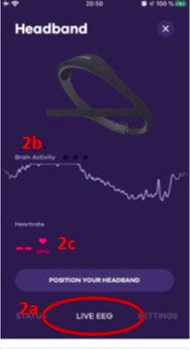 |
| You will see yourheart rate (LINK TO SECTION 3A) and small peaks in your brain activity (LINK TO SECTION 3B). Three dots will confirm that the positioning is correct (LINK TO SECTION 3C). Tap the “x” at the top of the screen and go to the next step. If these dots do not appear, you should readjust the headband. Repeat the headband positioning instructions again and make sure all DREEM 2 sensors are in good contact. |
| 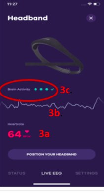 |
Step 4: After exiting theHeadbandscreen you will now be on theDreem 2screen. SelectNight(7.b) and tap thered circular button to continue (7.b).
| 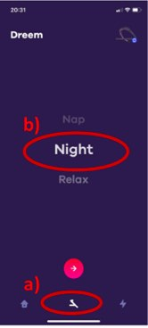 |
| Figure 7: Selecting a sleep session in the Dreem 2 mobile application. |
| Figure 7: Selecting a sleep session in the Dreem 2 mobile application. |
Step 5: On the Dreem 2 screen there are several options to configure, which will be disabled for this study period. Tap START NIGHT button to begin recording (Figure 8). The Dreem 2 headband is now configured to record a sleep session (Figure 9). The Bluetooth and Wi-Fi connection to the Dreem 2 headband will automatically turn off to save battery power. Theblue light on the head headband will shut off after a few minutes.
 |
| Figure 8: Options are disabled during the study. |
| 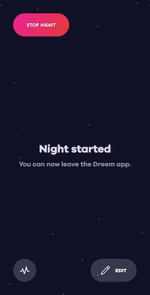 |
| Figure 9: When a session starts you can close the app. |
|
| Figure 8: Options are disabled during the study. |
| Figure 9: When a session starts you can close the app. |
Step 6 - Stopping a recording: After waking up, proceed to a short press on the power button to wake the headband up. The button will light blue. Press and hold the power button for 3-5 seconds. The button will blink and turn off.This will end the_sleep session_ and data recording on the headband.
Charging the headband
After wearing the Dreem 2 headband during a night’s sleep it should be placed on charge. Remove the headband from your head and plug in the charging cable to begin charging. The power button will blink orange when the battery is lower than 60%, will blink blue when between 60-99% and will be asteady blue once fully charged.
| 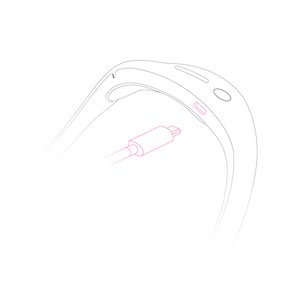 |
Once on charge, the headband will upload recorded data to Dreem 2 server through Wi-Fi.
What will I need to do before I can start using this?
Any account setup required?
No. The provided smartphone will come with Dreem 2 preinstalled for you to begin using.
Needs pairing with hub-device?
Please see [LINK TO SECTION 3] for details on how to pair the Dreem 2 headband with the provided smartphone.
Any configuration / assembly required?
Yes. The strap size of the Dreem 2 headband can be adjusted to increase comfort. You should also connect (pair) the Dreem 2 headband with the installed Dreem 2 mobile application on the provided smartphone using Bluetooth. Once connected and only on your first use, please configure the headband to connect to Wi-Fi. Instructions for these three activities are described inSection 3.
Troubleshooting/FAQ
The device / app seems to have stopped working: what should I do?
Battery?
The Dreem 2 headband will last around 12 hours and takes 2-3 hours to fully charge. Please charge your headband in the day after night use to ensure the data can be recorded when worn.
Connectivity issues?
If you are having trouble pairing your headband and smartphone, please ensure that: your headband is sufficiently charged and near the smartphone. If you continue to have issues, please restart your phone and headband by turning both off and on by holding the power button down on each device for 5 seconds.
Need to restart or log in again?
The provided smartphone uses study specific credentials to log into the mobile application. If you have logged out, please contact the research site for how to log into the Dreem 2 app.
Using the device / app is uncomfortable to me: what can I do?
Adjust wear style?
If you feel that the headband is too tight or lose during use, please readjust the headband to find a more comfortable fit. Details of adjusting the headband are described inSection 1.
Adjust usage pattern?
The Dreem 2 headband should be worn during sleep. If you encounter any skin sensitivity or irritation, please contact your local study centre as indicated below.
How can I get help with using this?
If you have any other questions or concerns, please contact your local study centre:
| Newcastle upon Tyne, United Kingdom | Rotterdam, Netherlands | Kiel, Germany | Muenster, Germany |
|---|---|---|---|
| Person Name, Centre Name, Location | Person Name, Centre Name, Location | Person Name, Centre Name, Location | Person Name, Centre Name, Location |
Newcastle upon Tyne, United Kingdom
Location
Person Name
Centre Name
Rotterdam, Netherlands
Location
Person Name
Centre Name
Kiel, Germany
Location
Person Name
Centre Name
Muenster, Germany
Location
Person Name
Centre Name
Device return
What do I do when a period of device use is over?
Please store the device in a safe place and make sure it stays clean and dry. Please contact the person that provided you with it to arrange further steps.
Before the device is returned or disposed of: does any data need to be transferred?
The provided Samsung smartphone comes with the Dreem 2 application preinstalled and needs to be configured to access your home Wi-Fi. You can verify that data has been uploaded after a sleep session by opening the Dreem 2 application. If you can see an overview of the sleep session as illustrated in Figure N below, then upload has been a success.
| 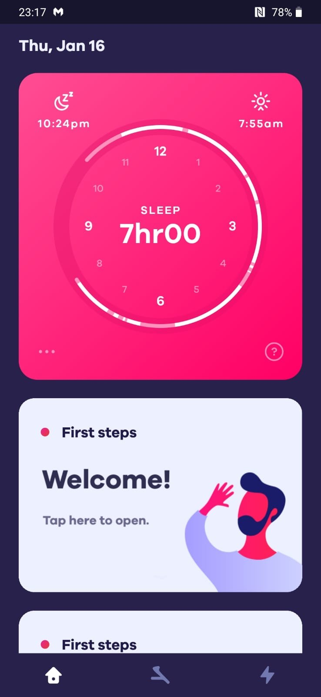 |
| Figure N: After a sleep session you can verify that data was successfully uploaded as an overview of session is presented to you in the mobile application. |
| Figure N: After a sleep session you can verify that data was successfully uploaded as an overview of session is presented to you in the mobile application. |
If you cannot see an overview of your previous sleep session, then please verify that your headband is connected to Wi-Fi (LINK TO SECTION 2). If the problem persists, please contact the study site for help.
Do I need to return the device somewhere?
Please contact the study site that provided you with the Dreem 2 device to arrange further steps. You will have to return it on your final site visit or by post – subject to further individual arrangement.